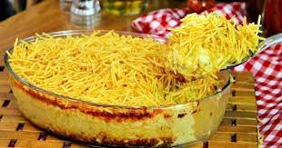

Fricasse de Frango

ingredientes
- 1 Peito de Frango
- 1 Lata de Milho
- 1 Creme de Leite
- 2 Colheres de Requeijão
- Batata Palha
Modo de Preparo
- Coloque o Peito de frango para cozinhar
- No liquidificador coloque e bata:
- Lata de milho
- Creme de leite
- Requeijão
- 250g De queijo
- Preparo do Frango:
- Coloque o frango em uma panela
- Desfie o Frango
- Ligue o Fogo
- 3 Dentes de alho
- Metade de uma sebola
- 1 Colher de sopa de Sal
- (Tempere ao seu gosto)
- Coloque o molho
- Misture Tudo
- Deixe no Fogo por 15 minutos
- Despeje em outro recipiente (Forma)
- Coloque a batata palha
- Coloque o queijo
- Leve ao forno até gratinar o Queijo
links